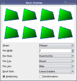

Painting Examples

Qt's painting system is able to render vector graphics, images, and outline font-based text with sub-pixel accuracy using anti-aliasing to improve rendering quality.
These examples show the most common techniques that are used when painting with Qt, from basic concepts such as drawing simple primitives to the use of transformations.
Demonstrates how affine transformations in QPainter works. | |
The Basic Drawing example shows how to display basic graphics primitives in a variety of styles using the QPainter class. | |
Demonstrates how Composition Modes work in QPainter. | |
Demonstrates the improved quality that antialiasing and floating point precision gives. | |
Demonstrates how to manipulate the elements of a QPainterPath. | |
The Font Sampler example shows how to preview and print multi-page documents. | |
Shows how gradients can be used with QPainter. | |
Shows how composition modes work in QPainter. | |
The Painter Paths example shows how painter paths can be used to beuild complex shapes for rendering. | |
The Path Stroking example shows various types of pens that can be used with QPainter. | |
The Transformations example shows how transformations influence the way that QPainter renders graphics primitives. | |
This example creates a widget similar to QLabel, that elides the last visible line, if the text is too long to fit the widget's geometry. |